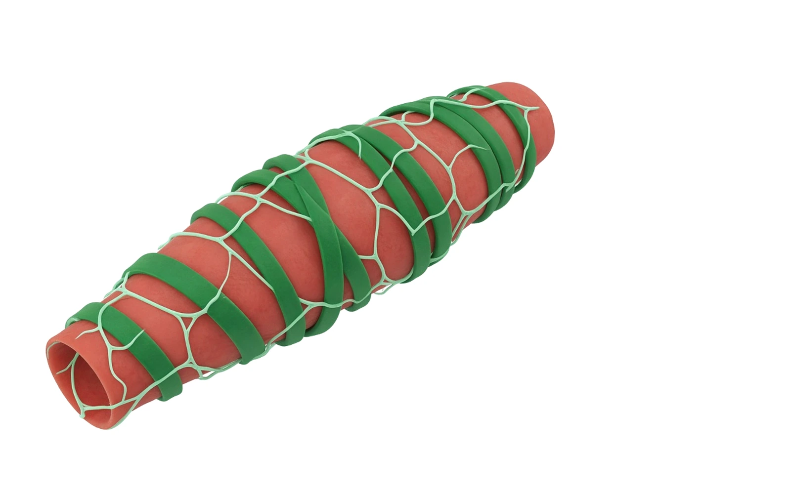
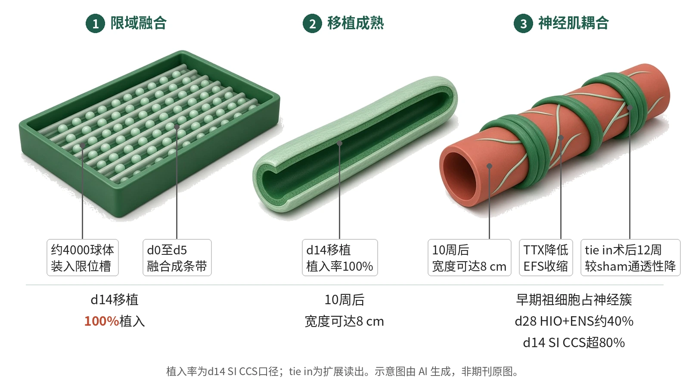

封面示意：赤陶红小肠类器官移植物，外绕淡绿神经丛。图片由 AI 生成，非原文图片。
在人源小肠类器官中，CCS让约4000个球体暂限融合，d14移植达到100%植入，并显著高于d14常规HIO。

- 约4000球体装入限位槽
- d0至d5融合成条带
- d6取出，培养至d14
- 移植后形成带ENS肠组织
图示约4000个球体在限位槽内融合，d6取出续培至d14；移植10周后形成厘米级、带人源ENS且可收缩的肠组织。示意图由 AI 生成，依据原文结果绘制，非期刊原图，不代表分子比例
研究背景与待解问题
人源胃肠类器官可模拟上皮、间质和部分功能，但传统HIO通常以球形单体生长，形状远离肠管；移植前成熟不足、尺度有限，也使后续手术和功能读出受限。结肠和胃类器官的常规培养还常有植入率低、尺寸小的问题。
另一个瓶颈是ENS。既有assembloid策略需把神经嵴细胞与肠球体分开制备再重组，增加比例和时序控制难度。Poling等把切口放在物理限域：不另加神经细胞，而是让大量球体在长槽中暂时共发育，促成熟。
研究设计
研究为开放获取全文的临床前工程化类器官研究。作者用打印模具制备PDMS限位槽。约4000个自发球体装入限位槽，d0仍分散，d5融合成统一结构，d6取出并在Matrigel中续培至d14。随后将SI CCS移植，并与常规HIO、HIO+ENS及成人小肠样本比较。
动物设计为每个常规类器官移植用1只小鼠、每个CCS移植用1只大鼠，全研究共用183只动物。研究不是临床试验，也未声明按组间优效效能设计；关键比较依赖Fisher、Mann–Whitney、ANOVA或t检验。神经肌肉读出以刺激前后60 s的AUC计量，胆碱能和硝能贡献由L-NAME、阿托品顺序处理后的差值推算。
核心结果
移植提前
与既往HIO至少培养28 d再做肾包膜或肠系膜移植不同，SI CCS在d14已可移植，植入率为100%；与d14肠系膜HIO相比，Fisher精确检验P=9.25×10−7。这一路径把球形单体改成长条限域培养，作者据此将SI CCS定位为更早可进入移植的组织。
尺度扩大
摘要称，与传统方法相比，CCS产物最高可大10倍；小肠CCS移植物在10周后宽度可达8 cm，并伴随更高植入率。尺寸分析纳入HIO n=6、SI CCS n=9，增殖、刷状缘酶和分泌细胞染色支持结构成熟，并可见大片连续上皮。
排除体型
为排除宿主体型，作者把d28 HIO分别移入小鼠和大鼠，收集时未见显著尺寸差异。随后常规类器官主要放入小鼠，CCS主要放入大鼠，在这一基础上分开处理宿主大小和移植物本身效应。
神经肌功能
非刺激状态下，器官浴比较tHIO + ENS（n=4）、SI CCS（n=5）和成人小肠（n=3）；SI CCS与成人小肠差异不显著。EFS可诱发SI CCS收缩，TTX显著降低反应；bethanechol引起剂量依赖收缩，scopolamine诱导放松，所有数据按组织质量归一化。
外推与腔暴露
移植前，早期祖细胞亚群占d28 HIO + ENS神经簇约40%，在d14 SI CCS中超过80%。CCS也扩展至结肠和胃：10周后C CCS宽度约6 cm，G CCS植入和尺寸提高。在SI CCS“tie in”与sham比较中，TEER无显著差异，但旁细胞通透性显著降低；结肠和胃CCS也在器官浴中显示ENS依赖性收缩，区域标志物亦支持组织类型身份。
机制解读
原文实验证明：免疫染色在10周SI CCS肌层间看到UCHL1、TUBB3、HuC/HuD阳性神经束，并与XRCC5共定位，支持神经来自人源移植物而非宿主长入；CHAT与NOS1显示兴奋性胆碱能和抑制性硝能神经亚型。
器官浴EFS诱发SI CCS收缩，TTX显著降低AUC；L-NAME和阿托品顺序抑制显示硝能和胆碱能都参与。bethanechol产生剂量依赖性收缩，scopolamine可放松，证明平滑肌与ENS可耦合也可独立反应，读出均归一化至组织质量。
作者推测：讨论中作者明确，CCS来源ENS的起源仍未确定，虽其神经多样性超过既往HIO + ENS体系。作者推测，限域提高细胞—细胞相互作用和共发育，可能有助于早期祖细胞在移植后的功能能力；这一链条仍是解释而非直接溯源。
局限与不确定
- 早期小鼠“tie in”虽在5 d见宿主与移植物连续上皮，却因高死亡率限制长期研究；原文还指出该模型需要高技能外科、严格饮食控制，且小类器官尺寸限制下游分析。
- 宿主体型被专门测试：d28 HIO移入小鼠和大鼠后尺寸无显著差异。此后常规类器官与CCS类器官分别主要放在小鼠和大鼠中，读数应连同这一动物使用策略理解。
- 样本量按实验不同而偏小：小肠尺寸为HIO n=6、SI CCS n=9，非刺激器官浴为n=4、n=5、n=3；组织学和免疫荧光多按代表图及重复数呈现。
- 讨论中作者明确，CCS来源ENS的起源仍未确定，虽其神经多样性超过既往HIO + ENS体系。原文把该模型定位为继续追踪ENS来源的系统。
临床/产业意义
若仅按本文临床前证据解读，CCS提供的价值不是单一细胞类型，而是把移植时点从传统28 d前移到d14，同时让组织在10周后达到厘米级并保留ENS功能。
对产业端，本文没有点名公司或管线；更现实的意义是给肠道发育建模、Hirschsprung病等ENS相关疾病模型、以及未来组织替代策略提供可放大的制造路径。患者疗效与长期安全性仍未在人体中得到验证。